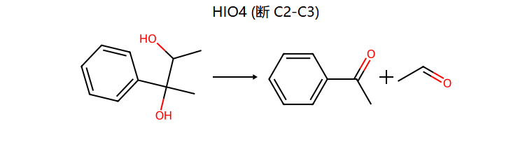
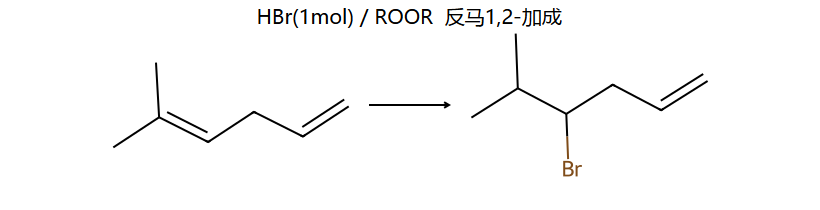
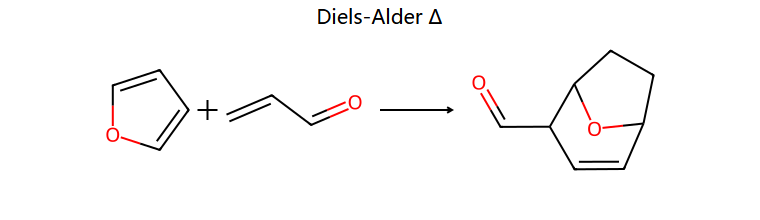
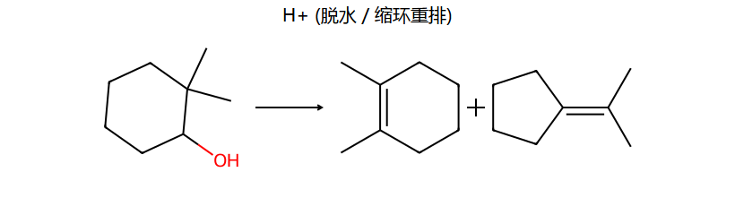
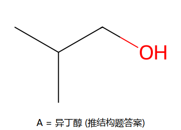

真题题型全库
这页是什么：把 SJTU 有机化学 A 卷（2021–2022 春季实证卷）的七大题型逐型拆解——每型给 频次★ + 标准步骤 + 真题原型（标年份/卷号）+ 易错。来源 真题考点全解.md（已对原卷扫描逐结构核验，2026-05-29 修订 4 处答案）。
考期：6/29 10:30 下院113 ｜ 武大第六版。
📊 卷型分值结构（A 卷实证）
| 大题 | 题型 | 分值 | 小题 | 考查重心 |
|---|
| 一 | 命名/写结构 | 9 | 6 | 桥环·E/Z·R/S·萘环·醚/炔 |
| 二 | 选择题 | 18 | 12 | 手性·芳香性·加成速率·SN·定位·能量图 |
| 三 | 完成反应 | 24 | 10 | 重排·SN1/SN2 立体·HIO₄·D-A·Grignard·酚醚 |
| 四 | 化学鉴别 | 8 | 2 组 | 选试剂区分（酚/醇/端炔/烯） |
| 五 | 解释反应(机理) | 16 | 2 | 碳正离子重排画箭头·分子内 F-C |
| 六 | 合成题 | 20 | 4 | 占位策略·炔钠增碳·Grignard+CO₂ |
| 七 | 推结构 | 5 | 1 | 醇氧化/脱水/KMnO₄/HIO₄ 推断链 |
大头判断：完成反应(24)+合成(20)+机理(16) = 60 分全靠"反应+机理"；命名/选择/鉴别/推结构 = 40 分靠"概念+判据"。期中是 ch1–9，期末向后扩到醛酮/羧酸及其衍生物/胺（ch11+），卷型分值结构沿用同款。
题型 A — 完成反应（24 分，最大；A 卷三-1～三-10）
给"底物 + 试剂/条件"写产物（含立体）。考点高度集中在 8 个机理类型，按频次排：
A1. 碳正离子重排 ★★★ 真题反复出，新戊醇是钉子题
标准步骤
- 判断是否走碳正离子（HX/ZnCl₂、浓 H₂SO₄、醇脱水加热、SN1、E1、F-C 烷基化）
- 生成初始 C⁺
- 若初始 C⁺ 不稳（1°）→ 找邻位基团 1,2-迁移（H>烷基；环 C–C 可扩/缩环）使级数升高
- 亲核体捕获稳定后的 C⁺ 或脱 β-H 成烯
真题原型（A 卷三-2）
(CH₃)₃C–CH₂OH + 浓 HCl/ZnCl₂ → 2-氯-2-甲基丁烷（1° C⁺ → CH₃ 1,2-迁移 → 3° C⁺ → Cl⁻；骨架变了带乙基）。

对比同底物 + SOCl₂/吡啶 → 新戊基氯（不经 C⁺、骨架不重排）。

⚠️ 易错
"HX/ZnCl₂、浓 H₂SO₄ 必重排；SOCl₂/PBr₃ 不重排"——经典对比对。别对 HCl/ZnCl₂ 直接写 OH→Cl 不重排（必丢分）。详见 ch10 · 10.6①。
A2. 频哪醇重排 ★★★ 你最持久卡点（标 ⚠️ 四次）
标准步骤
- 邻二醇 + H⁺，一个 OH 质子化成 H₂O⁺
- 脱水生成相对稳定的 C⁺
- 邻位与该 C⁺ 反式共平面（anti-periplanar）的基团 1,2-迁移
- 迁移后氧上正电荷由相邻 OH 共振稳定 → 失去 H⁺ 得到酮/醛
真题原型（A 卷三-8 下路，H⁺）
底物 = 2-苯基-2,3-丁二醇（带苯基，不是对称频哪醇）→ 苄位 C2 脱水成 Ph 稳定的 3° C⁺ → C3 上 CH₃ 1,2-迁移 → 2-甲基-2-苯基丙醛 Ph–C(CH₃)₂–CHO（产物是醛！）。

经典对称频哪醇 (CH₃)₂C(OH)–C(OH)(CH₃)₂ + H⁺ → 频哪酮（酮）是教材原型；本卷换成带苯基的不对称版，迁移产物变成醛，务必区分。
⚠️ 易错
立体电子规则（anti 共平面）凌驾于迁移倾向之上：环状二醇要画椅式构象，看 C⁺ 旁 axial 位挂的是谁谁就迁——是环 C–C 键→缩/扩环，是 CH₃→甲基迁移。顺式二醇可能转不到 anti 构象 → 反应极慢。详见 ch10 · 10.6③ 和 我的薄弱点。
A3. HIO₄ 氧化断裂邻二醇 ★★★ 选择+完成+推结构都考
标准步骤
找邻二醇 / α-羟基酮 / α-羟基醛 / 邻二酮 / 邻氨基醇 → 断中间 C–C 键 → 每个原羟基/羰基碳各得一个羰基（–CHOH→–CHO，–C(R)(OH)→酮，–CH₂OH 端→HCHO）→ 两侧不同得两种产物、对称得一种。
真题原型（A 卷三-8 上路）
2-苯基-2,3-丁二醇 + HIO₄ → 断 C2–C3 → 苯乙酮 PhCOCH₃ + 乙醛 CH₃CHO（两种）。同底物 H⁺ 重排得一个醛、HIO₄ 断键得两个羰基——同底物不同试剂对照。

选择题三-… 也考"生成两种氧化产物的是"→ 选不对称邻二醇。
⚠️ 易错
HIO₄ 只断 C–C，不动孤立 C=C / 苯环；对称邻二醇得 1 种、不对称得 2 种，别数错。
A4. HBr / 过氧化物（反马，仅 HBr 有效） ★★ A 卷三-6
真题原型
(CH₃)₂C=CH–CH₂–CH=CH₂（5-甲基-1,4-己二烯，孤立二烯）+ HBr(1 mol)/ROOR → 自由基机理优先加更易生成稳定自由基的三取代双键，反马 1,2-加成：Br 加到取代少的内侧碳、H 加到 (CH₃)₂C，端基乙烯不动 → (CH₃)₂CH–CHBr–CH₂–CH=CH₂。

⚠️ 易错
本卷底物是孤立 1,4-二烯，反马是普通 1,2-加成（不是 1,4！Br 也不在端碳）。反马只对 HBr + 过氧化物，HCl/HI 无此效应。只有共轭二烯才考虑 1,4。别误记成"异戊二烯 + HBr 1,4"。
A5. 卤代物 SN1（消旋）vs SN2（翻转） ★★★ A 卷三-5、二-12、二-9
标准步骤
判条件 → AgNO₃/乙醇、极性质子、3° → SN1 → 平面 C⁺ → 外消旋；NaI/丙酮(Finkelstein)、强 Nu、1°/2° → SN2 → Walden 翻转。
真题原型
- 三-5：手性 2-氯戊烷 ── AgNO₃/乙醇 → 外消旋；── NaI/丙酮 → 构型翻转的碘代物。
- 二-12：手性碘化物在丙酮/水放置 → SN2 → 构型翻转。
- 二-9（速率）：CH₃I 浓度×3、OH⁻ 浓度×½ → $v=k[\text{CH}_3\text{I}][\text{OH}^-]$ → $3\times\tfrac12=1.5$ → 提高 50%。
⚠️ 易错
速率题两个浓度都要乘进去；SN1 在 AgNO₃ 下也可能伴重排。
A6. Diels–Alder [4+2] ★★ A 卷三-4
真题原型
呋喃 + 丙烯醛 →Δ→ 桥环加成物（7-氧杂二环[2.2.1]庚烯甲醛）。

要点
双烯须 s-cis；亲双烯体带吸电子基（CHO/COOH/CN）；endo 为主（动力学）；双烯/亲双烯体上取代基相对构型在产物中保持（cis 规则）。
A7. Grignard 增碳 + D₂O 标记 ★★ A 卷三-7、六-2
真题原型
- 三-7：亚甲基环己烷 + HCl →(马氏)1-氯-1-甲基环己烷 → Mg → 格氏 → D₂O → 1-甲基-1-氘代环己烷（C–D）。
- 六-2：(CH₃)₃COH 不能直接做格氏（叔醇）；走 (CH₃)₃CBr→Mg→格氏→CO₂→H⁺ → 2,2-二甲基丙酸（增 1 碳）。
Grignard 增碳速记
+CO₂→羧酸(+1C)；+环氧乙烷→伯醇(+2C)；+醛→仲醇；+酮→叔醇；+D₂O→C–D。遇活泼 H（–OH/–NH/–C≡CH）自杀失活。
A8. 芳环 EAS / 侧链 / 还原 / 酚烷基化 ★★ A 卷三-1、三-3、三-9、三-10
- 三-1：3-溴-4-碘甲苯 + Cl₂/500℃ → 侧链 α 自由基氯化（高温/光照=侧链；Lewis 酸=环上）→ ArCH₂Cl → CN⁻ → ArCH₂CN → H⁺/H₂O → ArCH₂COOH。
- 三-3：4-硝基联苯 + HNO₃/H₂SO₄ → 硝基进未取代环的对位 → 4,4′-二硝基联苯。
- 三-9：苯 + 环氧乙烷/AlCl₃ → β-苯乙醇（F-C 烷基化，环氧开环增 2 碳）。
- 三-10：苯酚 + 异丁烯/H₂SO₄ → 叔丁基正离子既可 O-烷基化得叔丁基苯基醚、也可 C-烷基化(EAS)进对位得 4-叔丁基苯酚。⚠️ 标准答案两种产物都接受。
题型 B — 合成题（20 分；A 卷六-1～六-4）
B1. 磺酸基占位策略 ★★★ 芳环定位高频
真题原型（六-3）：苯 → 邻硝基苯甲酸
苯 ─CH₃Cl/AlCl₃→ 甲苯 ─H₂SO₄→ 对甲苯磺酸（SO₃H 先占对位）─HNO₃/H₂SO₄→ 邻位硝化（对位被占只能去邻）─稀 H₂SO₄/H₂O,Δ→ 脱磺酸基（可逆）─KMnO₄→ 邻硝基苯甲酸。
占位逻辑：先磺化占对位 → 硝化被逼到邻位 → 高温脱磺酸还原占位基。
B2. 炔钠 + RX / 环氧乙烷增碳 ★★★
真题原型（六-4）：乙炔 + ≤4C 原料 → 1-戊醇
HC≡CH ─NaNH₂→ HC≡CNa ─CH₃I→ 丙炔 ─NaNH₂→ 丙炔钠 ─环氧乙烷→ 戊-3-炔-1-醇 ─H₂/Pt→ 1-戊醇。
增碳：炔钠 + 1° RX（SN2，端炔上增链）；炔钠 + 环氧乙烷（增 2C 伯醇）。
B3. 乙炔环三聚 + F-C 增碳 + 加氢 ★★ A 卷六-1
3 乙炔 ──(环三聚)→ 苯 ──环氧乙烷/AlCl₃→ β-苯乙醇 ──H₂/Pt,180℃(同时还原苯环)→ 2-环己基乙醇。
另：六-2 的 Grignard + CO₂ → 羧酸 路线见 A7。
合成解题模板：①画目标→标官能团相对位置；②逆推断键（官能团旁、Grignard+羰基、炔钠/环氧增碳、乙酰乙酸酯/丙二酸酯骨架）；③定引入顺序（先邻对位定位基、间位基后上、占位/保护）；④顺查每步有无重排/多取代。
题型 C — 选择题（18 分，12 题；A 卷全实证）
| # | 真题考点 | 标准判据 | 答案 |
|---|
| 1 | 无手性的化合物 | 找对称面/对称中心 | 有对称面者 |
| 2 | 烯烃加氢最快 | 取代基越少越快（烯越稳越难吸附） | CH₂=CH₂ |
| 3 | 与亚铜氨呈红棕色 | 仅端炔 RC≡CH | 端炔 |
| 4 | 有芳香性 | 平面环状共轭 + π=$4n+2$ | 卓鎓 6π |
| 5 | 顺-2-丁烯→反-2-丁烯 | Br₂→NaNH₂(成炔)→Na/液NH₃(反式还原) | — |
| 6 | HIO₄ 生成两种产物 | 不对称邻二醇 | 不对称者 |
| 7 | 硝化最快 | 活化最强 –OCH₃ | –OCH₃ |
| 8 | 最易与 CH₃Br SN2 | 亲核性最强 C₂H₅O⁻ | C₂H₅O⁻ |
| 9 | SN2 浓度变化 | $v=k[\text{RX}][\text{Nu}]$，3×½ | +50% |
| 10 | 脱水最快（4 个都 1° 醇） | PhCH₂CH₂OH 脱水经 1,2-H 迁移得苄基 C⁺、产物苯乙烯共轭 | PhCH₂CH₂OH |
| 11 | 1,3-丁二烯+Br₂ 能量图 | 1,2 动力学(活化能低)、1,4 热力学(稳) | — |
| 12 | 手性碘化物丙酮/水转醇 | 水做 Nu 背面进攻、SN2 Walden 翻转 | 翻转 |
选择高频陷阱：① "有手性碳 ≠ 有手性"（内消旋反例）；② 加氢快慢与稳定性反向；③ 银氨/铜氨只识端炔；④ D/L 与 (+)/(−) 无对应；⑤ 卤素是钝化但邻对位定位。
题型 D — 化学鉴别（8 分，2 组；A 卷四-1、四-2）
标准答法
选一个只对其中一种有专属现象的试剂，逐一区分；写明现象（颜色/沉淀/分层）。
真题原型四-1：苯酚 / 苯甲醇 / β-苯乙醇 / 1-苯基-1,2-乙二醇
- 苯酚 ── FeCl₃ → 蓝紫色（酚专属）
- 1-苯基乙二醇 ── HIO₄ → HIO₃，再 AgNO₃ → 白色 AgIO₃ 沉淀（邻二醇专属）
- 苯甲醇(1°) vs β-苯乙醇(1°)：Lucas 区分快慢——苄醇分层快、普通 1° 慢
真题原型四-2：苯 / 乙基苯 / 苯乙炔 / 苯乙烯
- 苯乙炔 ── Ag(NH₃)₂⁺ → 白色沉淀（端炔专属）
- 苯乙烯 ── Br₂/CCl₄ 或 KMnO₄ 褪色（C=C）
- 乙基苯 ── KMnO₄ 加热侧链氧化（有 α-H）；苯——不反应
鉴别试剂速记：FeCl₃(酚紫)｜Lucas/ZnCl₂(3°快·2°慢·1°室温不反应)｜HIO₄+AgNO₃(邻二醇白沉)｜Ag(NH₃)₂⁺/Cu(NH₃)₂⁺(端炔)｜Br₂或KMnO₄褪色(烯炔)｜NaHSO₃(醛/甲基酮)｜Tollens银镜(醛)｜碘仿黄沉(甲基酮/乙醇/乙醛)。
题型 E — 解释反应 / 机理（16 分，2 题；A 卷五-1、五-2）
标准答法：必须画出每一步的电子转移箭头 + 中间体（碳正离子/σ络合物），只写产物拿不到机理分。
真题原型五-1（分子内 F-C）
PhCH₂CH₂C(CH₃)₂CH₂OH ─H₃PO₄→ 1-乙基-1-甲基茚满
机理：OH 质子化 → 脱水成 1° C⁺ → 1,2-甲基迁移成 3° C⁺ → 分子内亲电进攻苯环（关环）→ 脱 H⁺ 重新芳构化。
真题原型五-2（脱水 + 缩环，三产物）
2,2-二甲基环己醇 + H⁺ → 三种产物：

机理：质子化脱水 → 2° 环 C⁺ →（a）直接脱两方向 β-H 得环内烯（两种）；（b）环 C–C 迁移缩环成 3° 环戊基 C⁺ → 脱 H⁺ → 亚异丙基环戊烷。详见 ch10 · 10.6。
机理画图三必须：①标 C⁺ 形式电荷；②箭头从电子对出发指向缺电中心；③写出每个中间体。重排题先问"谁在 anti / 谁迁更稳"。
题型 F — 命名 / 写结构（9 分，6 题；A 卷一）
双向考（结构↔名称）。
| 真题 | 考点 |
|---|
| 7-甲基二环[2.2.1]庚烷 | 桥环命名（桥头碳起、最长桥编号） |
| (E)-3-氯-2-苯基戊-2-烯 | E/Z（CIP 两端各比老大） |
| 4-苯基环己-1-烯 | 烯位号最小 |
| (2R,3R)-戊-2,3-二醇 | Fischer 投影定 R/S |
| 8-硝基萘-2-酚 | 萘环固定编号 |
| 烯丙基乙炔基醚 CH₂=CH–CH₂–O–C≡CH | 醚/不对称命名 |
R/S 三步：CIP 排序 → 最小基(H)朝后 → a→b→c 顺时针=R 逆=S。Fischer 中横键朝前：H 在横键时所见旋向取反。
题型 G — 推结构（5 分，1 题；A 卷七-1）
标准答法
顺反应链逐环节缩范围，每步反应类型即一个约束。
真题原型七-1
A(C₄H₁₀O) ─CrO₃/H₂SO₄→ B；A 脱水只得一种烯 C；C + 稀冷 KMnO₄ → D；D + HIO₄ → 一种醛 E + 一种酮 F。

推断（标准答案）：
- DBE = $\frac{2\times4+2-10}{2}=0$ → A 是饱和一元醇；被 CrO₃/H₂SO₄ 氧化 → 1° 或 2° 醇。
- "脱水只得一种烯"钉死 A 骨架：异丁醇 (CH₃)₂CHCH₂OH 脱水只给唯一烯（异丁烯），2-丁醇会给两种 → A 必是异丁醇。
- D + HIO₄ 得"醛 + 酮"（一醛一酮，不是两个醛）→ D = (CH₃)₂C(OH)–CH₂OH。
A=异丁醇 ｜ B=异丁酸 ｜ C=异丁烯 ｜ D=2-甲基-1,2-丙二醇 ｜ E=甲醛 ｜ F=丙酮。
⚠️ 解题逻辑
先算 DBE → CrO₃ 氧化判醇级（1°→酸/2°→酮）→ "脱水只得一种烯"反推骨架对称性 → 稀冷 KMnO₄ 顺式双羟化 → HIO₄ 断邻二醇定产物。"醛 E + 酮 F"（一醛一酮）排除了对称二醇（若 A 是 2-丁醇，HIO₄ 会断成两分子乙醛，矛盾）。$\text{DBE}=\frac{2C+2+N-H-X}{2}$。
必背：稳定性 / 活性序（默写线）
核心活性序
- 碳正离子：苄基/烯丙基(共振)≈3°>2°>1°>CH₃⁺>乙烯基
- 自由基：3°>2°>1°>CH₃·
- 亲核性（同周期质子溶剂）：C₂H₅O⁻>OH⁻>C₆H₅O⁻>CH₃COO⁻；同族向下增（I⁻>Br⁻>Cl⁻>F⁻）
- 羧酸衍生物活性：酰氯>酸酐>酯>酰胺>羧酸根
- 羰基亲核加成：HCHO>RCHO>R₂CO>大位阻酮
- 胺碱性（水溶液）：2°>1°>3°>NH₃>芳胺
- EAS 活化邻对位：–NR₂/–NH₂>–OH>–OCH₃>–NHCOR>–R>–Ph（注意 –OH 强于 –OCH₃）；钝化间位：–NO₂>–CN>–SO₃H>–CHO>–COR>–COOH；卤素=弱钝化但邻对位
立体化学结论（必记）
- 催化加氢=顺式；Br₂=反式(溴鎓)；硼氢化氧化=顺式+反马；环氧化=顺式；稀冷 KMnO₄=顺式邻二醇
- SN2=Walden 翻转；SN1=外消旋；E2=反式共平面
- Lindlar→Z(顺)；Na/液NH₃→E(反)
- 环氧开环：酸催化攻取代多碳、碱催化攻取代少碳，皆反式
2026-05-29 真题核验修订（已对原卷扫描逐结构比对）：① 三-8 频哪醇底物是 2-苯基-2,3-丁二醇（产物醛，非频哪酮）；② 三-8 HIO₄ 产物是苯乙酮+乙醛；③ 三-6 底物是 5-甲基-1,4-己二烯 走反马 1,2-加成；④ 七-1 A=异丁醇（非 2-丁醇）。
真题年份说明：仅 1 套真实成卷（2021–2022 春季 A 卷，本身是期中范围 ch1–9）；期末范围 ch10/ch11+ 的"真题级"题型来自该卷后段题 + 教材习题 + 自建详解。ch11+（醛酮/羧酸衍生物/胺）⚠️ 无独立真题卷，考前请用武大六版课本核对具体试剂条件与产物。
数据源：课程/有机化学/真题考点全解.md（已二次独立验证）｜ 武大《有机化学》第六版 ｜ AI 辅助整理 + RDKit 结构图